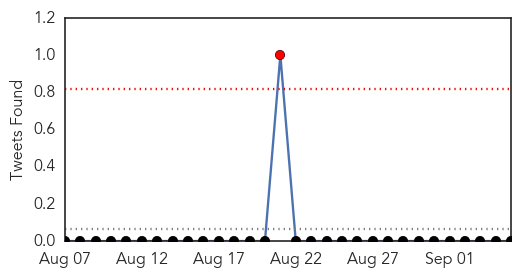
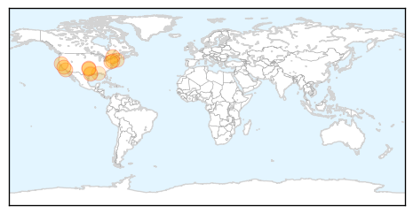
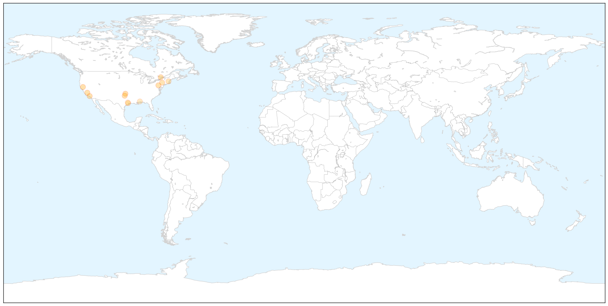
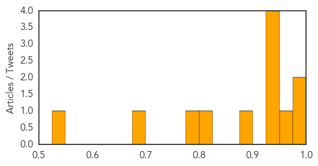

MERS
30-Day Web Trend
2 alerts, 0 warnings

30-Day Twitter Trend
1 alerts, 0 warnings

Article Locations


Article Confidences

Top Articles:
- 0.994
- Nurse, family members set to go home after testing negative for Mers-CoV
- 0.993
- PNP readies hospital isolation rooms for possible Ebola victims–spokesman
- 0.992
- Nurse turns out corona-virus free
- 0.991
- Nurse from KSA didn’t have MERS
- 0.988
- Pinay nurse didn’t have MERS
- 0.987
- Filipino nurse thought to have MERS virus did not
- 0.968
- Filipina nurse thought to have Mers tests negative
- 0.964
- Filipina nurse thought to have Mers tests negative
- 0.955
- PH nurse cleared of MERS-CoV
- 0.944
- Phl still MERS free as nurse tests negative
- 0.938
- (UPDATE) Nurse tested negative for MERS-CoV, says gov't
- 0.936
- Filipina nurse tested negative for MERS-CoV, says Philippine gov't
- 0.916
- Nurse quarantined in Davao for MERS-CoV is released
- 0.915
- 6,570 Moro pilgrims leave for Mecca amid deadly MERS-CoV, Ebola threats
- 0.911
- Filipina nurse from Saudi tests negative for MERS
- 0.851
- Filipina nurse from Saudi Arabia negative for MERS-CoV
- 0.785
- Filipina nurse negative for Mers
- 0.731
- Body of Filipino MERS victim buried
Top Tweets:
-
No tweets found for Sep 05, 2014
West Nile Virus
30-Day Web Trend
1 alerts, 0 warnings

30-Day Twitter Trend
0 alerts, 0 warnings

Article Locations

X

Article Confidences
Top Articles:
- 0.979
- Oklahomans with West Nile virus now total six
- 0.978
- Glenn County confirms West Nile virus death
- 0.970
- West Nile virus at highest level ever in California mosquitoes
- 0.947
- Worst Outbreak Ever of West Nile Virus in California
- 0.945
- Four more samples test positive for West Nile virus
- 0.944
- West Nile virus cases down because of cooler summer temperatures
- 0.941
- First human case of the West Nile Virus detected in Carter County
- 0.896
- Oswego County finds EEE virus in swamps
- 0.808
- Harris County has record high of West Nile virus
- 0.783
- The Daily News of Newburyport: News
- 0.686
- Human case of Eastern equine encephalitis confirmed in Mobile resident
- 0.532
- 14th case of West Nile confirmed in Montgomery County
Top Tweets:
-
No tweets found for Sep 05, 2014